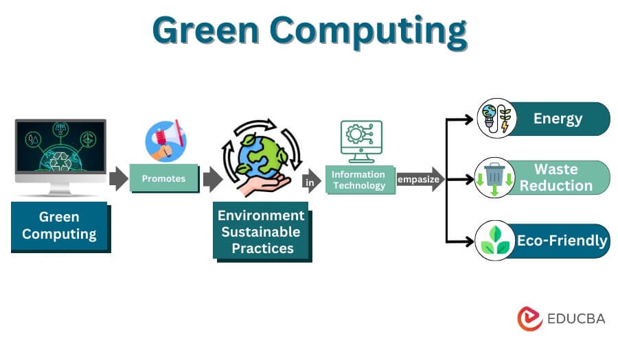

Il Green Computing è l'applicazione pratica dell'Agenda 2030 nel settore IT, focalizzandosi sulla progettazione, produzione e utilizzo di dispositivi elettronici in modo ecologico per minimizzare l'impatto ambientale, riducendo consumi energetici, rifiuti elettronici (e-waste) e conservando risorse, in linea con i principi di sostenibilità del Pianeta, Prosperità, Persone dell'ONU.
Negli ultimi anni, la diffusione di tecnologie come il cloud computing, i data center e i dispositivi elettronici ha portato a un forte aumento dei consumi energetici e dei rifiuti elettronici. Il Green Computing nasce proprio per affrontare queste problematiche, promuovendo soluzioni che permettano di utilizzare l'informatica in modo più efficiente e responsabile, senza rinunciare all'innovazione tecnologica.
Un aspetto fondamentale del Green Computing riguarda l'ottimizzazione dell'energia: ad esempio, l'uso di componenti hardware a basso consumo, sistemi di raffreddamento più efficienti nei data center e software progettati per utilizzare meno risorse. Anche semplici azioni quotidiane, come spegnere i dispositivi inutilizzati, contribuiscono a ridurre l'impatto ambientale.
